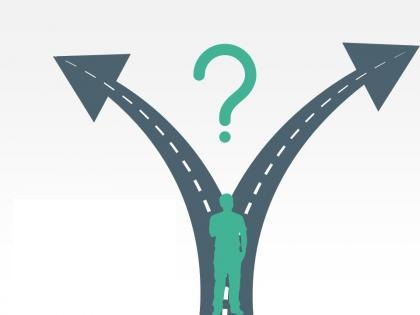
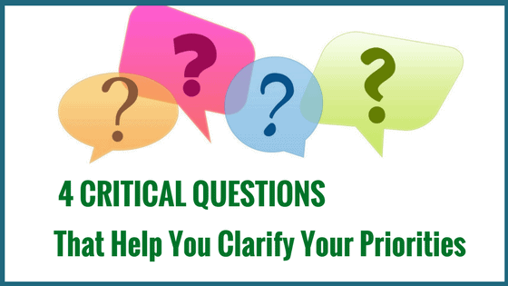

არჩევანი

- არჩევნის საჭიროება
- არჩევანი არის მოქმედება რომლის დროსაც მიზნებზე ფოკუსის დავიწროვება ხდება რასაც თან ახლავს თავისი დადებითი და
უარყოფითი მხარეები
- დადებითი - არის ის რომ ფოკუსის დავიწროვება იწვევს ეფექტურობის ზრდას
- უარყოფითი - არის ის რომ ეფექტურობის ზრდა იწვევს კონკრეტული სფეროში "ჩაკეტვას",
სფეროების ცვლა კიდევ ცხოვრებისეული მოვლენებიდან გამომდინარე ხშირად გვიწევს
რა დროსაც ვიწრო ფოკუსი გვაფერხებს
კითხვები

- კითხვები
- რა მინდა ?
- რატომ მინდა ?
- რა მეხმარება და რა მიშლის ხელს ?
- როგორ დავაღწიო თავი "უარყოფით გავლენებს" თავი და აღმოვჩნდე "დადებით გავლენებში" ?
გეგმა

- გეგმა
- ფოკუსის გასწორება
- ინფორმაციის შეგროვება
- მოქმედების დაწყება
- შედეგების მიღება
- შეფასება